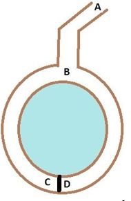

В основе криптовалюты ZCash — протокол доказательств с нулевым разглашением zk-SNARK, который и обеспечивает анонимность переводов. Он позволяет проверять наличие защищенных транзакций, но не указывает ни на владельцев, ни на конкретную сумму. Публичными остаются лишь временные метки.
Впервые о доказательстве с нулевым знанием заговорили еще в 1986 г., тогда трое ученых описали эту технологию для криптографических протоколов. Чуть позже исследователь Жан-Жак Кискатер придумал простой способ объяснения этого метода. Свой пример он назвал пещера нулевого разглашения. Кискатер выдумал двух героев Пегги и Виктора, где Пегги открывают дверь в пещере круглой формы с помощью магического слова.

По условиям, Пегги знает магическое слово, которое позволит открыть дверь между точками C и D, но не желает выдавать никому свой пароль. А Виктор хочет узнать, действительно ли Пегги знает этот секретный ключ. Пока Виктор стоит в точке А, Пегги идет к двери по любому рукову - правому или левому. После того, как она доходит до двери, Виктор встает в точку B и кричит оттуда: «Пегги нужно выйти справа» или «Пегги нужно выйти слева». Получается, каждый раз вероятность того, что Пегги не знает пароль, равна 50%. Если же повторить процесс n раз, то вероятность будет 1/(2^n). При 20 же повторениях эта вероятность будет порядка 10e−6, и этого достаточно для верности предположения о том, что Пегги знает ключ.
Протокол zk-SNARK — это усовершенствованная версия доказательств с нулевым знанием, которая позволяет быстро показать, что пользователь знает что-то, при этом не раскрывая конкретных фактов. Пока создание зашифрованных транзакций требует больших вычислительных затрат, поэтому большая часть операций с Zcash все еще отправляются открыто.